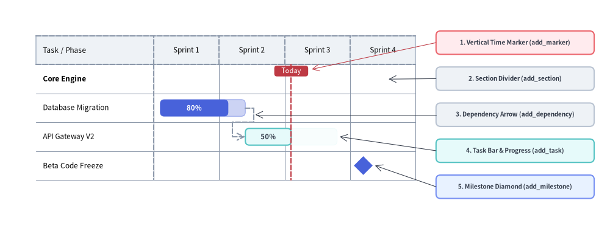
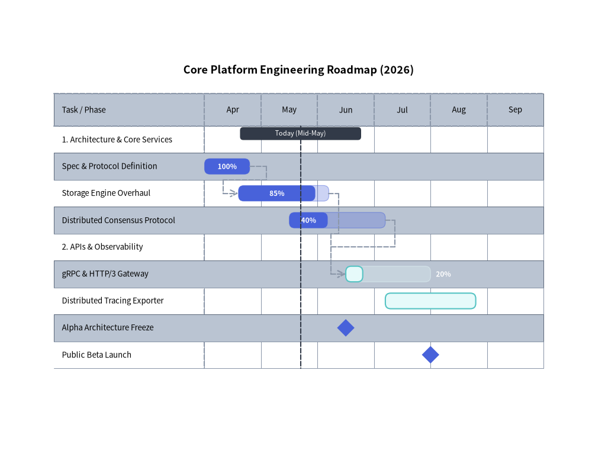
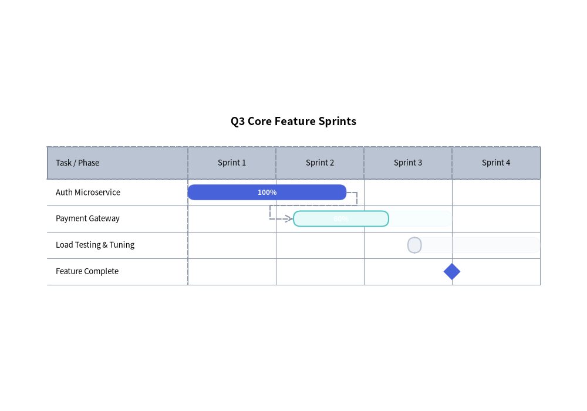

GanttChart: Project Roadmaps, Milestones & Dependencies
GanttChart (drawlib.charts.gantt) provides declarative, vector-grade project roadmaps, sprint schedules, and milestone timelines. Timeline intervals are structured horizontally along the X-axis while section divider banners, task rows, and milestones stack sequentially downwards along the Y-axis.
1. Overview & Structural Hierarchy

Source Code
from drawlib.canvas import save, setup
from drawlib.charts.gantt import GanttChart
from drawlib.lines import line
from drawlib.shapes import rectangle
from drawlib.styles import Styles
setup(width=132, height=52)
chart = GanttChart(
columns=["Sprint 1", "Sprint 2", "Sprint 3", "Sprint 4"],
axis_line_style=Styles.MutedDashed,
axis_text_style=Styles.Black.patch(text_size=10.5),
grid_style=Styles.MutedThin,
header_style=Styles.Neutral,
progress_text_style=Styles.WhiteBold.patch(text_size=10.0),
width=82.0,
label_width=26.0,
header_height=6.4,
row_height=6.4,
bar_radius=0.9,
)
chart.add_section("Core Engine", text_style=Styles.BlackBold.patch(text_size=10.5))
t1 = chart.add_task("Database Migration", start=0.1, end=1.4, style=Styles.PrimaryFlat, progress=0.8)
t2 = chart.add_task(
"API Gateway V2",
start=1.4,
end=2.8,
style=Styles.SecondaryNeutral,
progress=0.5,
progress_text_style=Styles.DarkBold.patch(text_size=10.0),
)
chart.add_milestone("Beta Code Freeze", at=3.2, style=Styles.PrimaryFlat)
chart.add_dependency(t1, t2)
chart.add_marker(at=2.1, style=Styles.DangerDashed, label="Today", label_style=Styles.WhiteBold.patch(text_size=10.0))
chart.draw(xy=(4.0, 8.0))
# Compute exact row Y coordinates from chart.get_size()
_, chart_h = chart.get_size()
rows_top = 8.0 + chart_h - 2.0 - chart.header_height
row_cy = [rows_top - (i + 0.5) * chart.row_height for i in range(4)]
# Structural Callout Annotations on the Right
callouts = [
(42.5, "1. Time Marker (add_marker)", Styles.DangerNeutral),
(34.5, "2. Section (add_section)", Styles.Neutral),
(26.5, "3. Dependency (add_dependency)", Styles.Neutral),
(18.5, "4. Task Bar (add_task)", Styles.SecondaryNeutral),
(10.5, "5. Milestone (add_milestone)", Styles.PrimaryNeutral),
]
for cy, label_txt, box_style in callouts:
rectangle(
(110.0, cy),
width=38.0,
height=5.4,
style=box_style.patch(shape_r=1.0),
text=label_txt,
text_style=Styles.DarkBold.patch(text_size=10.0),
)
line((91.0, 42.5), (61.4, rows_top - 1.0), arrow_head="->", style=Styles.DangerThin)
line((91.0, 34.5), (78.0, row_cy[0]), arrow_head="->", style=Styles.DarkThin)
line((91.0, 26.5), (50.0, row_cy[1] - 1.5), arrow_head="->", style=Styles.DarkThin)
line((91.0, 18.5), (69.2, row_cy[2]), arrow_head="->", style=Styles.DarkThin)
line((91.0, 10.5), (74.8, row_cy[3]), arrow_head="->", style=Styles.DarkThin)
save()
- Section Dividers (
add_section): Full-width banner rows that categorize tasks into functional phases or teams. - Task Bars (
add_task): Scheduled duration bars supporting completion ratios (progressin0.0–1.0) where the completed portion is filled at full opacity and the remaining span is tinted at reduced alpha. - Milestones (
add_milestone): Zero-duration diamond (rhombus) markers anchored at a specific column or numeric time index. - Vertical Time Markers (
add_marker): Full-height vertical reference lines with top badge labels (e.g.,"Today"). - Dependency Connectors (
add_dependency): Orthogonal routed arrows linking a predecessor task's end to a successor task's start. - Dependency Visibility Cascading (
show): Hiding aTask(task.show = Falseortask.draw_ratio = 0.0) preserves its row slot in the schedule and automatically hides anyDependencyarrows wherefrom_taskorto_taskis that task.
2. Engineering Release Roadmap with Dependencies
The following example demonstrates sections, tasks with completion progress indicators, milestones, orthogonal dependency routing, and a vertical "Today" marker:
from drawlib.canvas import save, setup
from drawlib.charts.gantt import GanttChart
from drawlib.styles import Styles
setup(width=118, height=85)
chart = GanttChart(
columns=["Apr", "May", "Jun", "Jul", "Aug", "Sep"],
axis_line_style=Styles.MutedDashed,
axis_text_style=Styles.Black.patch(text_size=10.5),
grid_style=Styles.MutedThin,
header_style=Styles.Neutral,
zebra_style=Styles.NeutralFlat,
progress_text_style=Styles.WhiteBold.patch(text_size=10.0),
width=106.0,
label_width=32.0,
title="Core Platform Engineering Roadmap (2026)",
title_style=Styles.BlackBold.patch(text_size=13.0),
header_height=6.0,
row_height=5.0,
bar_radius=1.0,
)
# 1. Core Services Section
chart.add_section("1. Architecture & Core Services", text_style=Styles.BlackBold.patch(text_size=10.5))
t1 = chart.add_task("Spec & Protocol Definition", start="Apr", end=1.0, style=Styles.PrimaryFlat, progress=1.0)
t2 = chart.add_task("Storage Engine Overhaul", start=1.0, end=2.5, style=Styles.PrimaryFlat, progress=0.85)
t3 = chart.add_task(
"Distributed Consensus Protocol",
start=1.5,
end=3.0,
style=Styles.PrimaryNeutral,
progress=0.45,
progress_text_style=Styles.DarkBold.patch(text_size=10.0),
)
# 2. APIs & Observability Section
chart.add_section("2. APIs & Observability", text_style=Styles.BlackBold.patch(text_size=10.5))
t4 = chart.add_task(
"gRPC & HTTP/3 Gateway",
start=3.0,
end=4.5,
style=Styles.SecondaryNeutral,
progress=0.35,
progress_text_style=Styles.DarkBold.patch(text_size=10.0),
)
t5 = chart.add_task("Distributed Tracing Exporter", start=3.5, end=5.2, style=Styles.Neutral, progress=0.0)
# 3. Milestones, Dependencies & Today Marker
chart.add_milestone("Alpha Architecture Freeze", at="Jun", style=Styles.PrimaryFlat)
chart.add_milestone("Public Beta Launch", at=4.5, style=Styles.PrimaryFlat)
chart.add_dependency(t1, t2)
chart.add_dependency(t2, t4)
chart.add_dependency(t3, t4)
chart.add_marker(at=1.7, style=Styles.DarkDashed, label="Today (Mid-May)", label_style=Styles.WhiteBold.patch(text_size=10.0))
chart.draw(xy=(6.0, 10.0))
save()

3. Time Coordinate Indexing & Agile Sprint Schedule
In GanttChart, time coordinates (start, end, at) can be specified either as:
- Column Name String: Matches an exact string in
columns(start="Apr"resolves to the left edge of the"Apr"column,end="Apr"resolves to the right edge of"Apr", andat="Jun"resolves to the midpoint of"Jun"). - Floating-Point Offset:
0.0is the left edge of column0,1.0is the boundary between column0and column1,1.5is the midpoint of column1, etc.
from drawlib.canvas import save, setup
from drawlib.charts.gantt import GanttChart
from drawlib.styles import Styles
setup(width=115, height=66)
chart = GanttChart(
columns=["Sprint 1", "Sprint 2", "Sprint 3", "Sprint 4"],
axis_line_style=Styles.MutedDashed,
axis_text_style=Styles.Black.patch(text_size=10.5),
grid_style=Styles.MutedThin,
header_style=Styles.Neutral,
progress_text_style=Styles.WhiteBold.patch(text_size=10.0),
width=103.0,
label_width=28.0,
title="Q3 Core Feature Sprints",
title_style=Styles.BlackBold.patch(text_size=13.0),
bar_radius=1.2,
)
s1 = chart.add_task("Auth Microservice", start=0.0, end=1.2, style=Styles.PrimaryFlat, progress=1.0)
s2 = chart.add_task(
"Payment Gateway",
start=1.2,
end=2.6,
style=Styles.SecondaryNeutral,
progress=0.6,
progress_text_style=Styles.DarkBold.patch(text_size=10.0),
)
s3 = chart.add_task(
"Load Testing & Tuning",
start=2.5,
end=3.8,
style=Styles.Neutral,
progress=0.25,
progress_text_style=Styles.DarkBold.patch(text_size=10.0),
)
chart.add_dependency(s1, s2)
chart.add_dependency(s2, s3)
chart.add_milestone("Feature Complete", at=3.0, style=Styles.PrimaryFlat)
chart.draw(xy=(6.0, 12.0))
save()

4. API Reference
Constructor (GanttChart)
All constructor arguments are keyword-only (*):
from drawlib.charts.gantt import Dependency, DrawDirection, GanttChart, Marker, Milestone, Section, Task
chart = GanttChart(
*,
columns: list[str],
axis_line_style: Style,
axis_text_style: Style | None = None,
header_style: Style | None = None,
grid_style: Style | None = None,
zebra_style: Style | None = None,
progress_text_style: Style | None = None,
background_style: Style | None = None,
title: str = "",
title_style: Style | None = None,
width: float = 90.0,
height: float | None = None,
row_height: float = 4.5,
header_height: float = 5.5,
label_width: float = 24.0,
bar_radius: float = 0.8,
)
| Parameter | Type | Default | Description |
|---|---|---|---|
columns |
list[str] |
Required | Ordered timeline interval names along the top header band (at least 1 required). |
axis_line_style |
Style |
Required | Mandatory style anchor for header borders and column divider ticks. |
axis_text_style |
Style | None |
None |
Style for column header titles and left-column row labels. If None, labels are omitted. |
header_style |
Style | None |
None |
Style for the top timeline header band background card. If None, header fill is omitted. |
grid_style |
Style | None |
None |
Style for vertical timeline column separator lines across rows. If None, gridlines are omitted. |
zebra_style |
Style | None |
None |
Style for alternating horizontal row background stripes. If None, zebra striping is omitted. |
progress_text_style |
Style | None |
None |
Default style for completion percentage labels ("85%") on tasks with progress > 0. |
background_style |
Style | None |
None |
Style for the outer chart background card. If None, card is omitted. |
title |
str |
"" |
Chart title text rendered at the top of the container. |
title_style |
Style | None |
None |
Typography style for title. Required for the title to render. |
width |
float |
90.0 |
Total bounding box width of the chart in canvas units. |
height |
float | None |
None |
Total bounding box height. If None (default), auto-sized dynamically from header_height + len(items) * row_height (minimum 20.0). |
row_height |
float |
4.5 |
Vertical height allocated per task, section, or milestone row. |
header_height |
float |
5.5 |
Height of the top column header band. |
label_width |
float |
24.0 |
Horizontal width reserved for the left task/milestone name column. |
bar_radius |
float |
0.8 |
Corner rounding radius for task bars (when task.style.shape_r is None). |
Methods & Properties
add_section(name: str, style: Style | None = None, text_style: Style | None = None, *, show: bool = True) -> Section: Appends a category section divider row and returns the mutableSectioninstance (styleoverrides the banner rectangle fill/border;text_styleoverrideschart.axis_text_stylefor the section title).add_task(name: str, start: str | float, end: str | float, style: Style, progress: float = 0.0, progress_text_style: Style | None = None, *, show: bool = True, draw_ratio: float = 1.0, draw_direction: DrawDirection = "left_to_right") -> Task: Appends a scheduled task bar row and returns the mutableTaskinstance.progress: Completion ratio clamped to[0.0, 1.0]. Whenprogress > 0, the full scheduled span is drawn as a translucent tint (alpha=0.28) ofstyle's fill color while the completed portion (progress * width) is drawn with the solidstyle.progress_text_style: Per-task override for the percentage label typography (falls back tochart.progress_text_style).draw_ratio&draw_direction: Partial spatial rendering ("left_to_right"extends the bar horizontally fromstarttowardend;"bottom_to_top"grows the bar vertically from its bottom edge).
add_milestone(name: str, at: str | float, style: Style, *, show: bool = True) -> Milestone: Appends a milestone row with a diamond marker anchored at timeatand returns the mutableMilestoneinstance.add_marker(at: str | float, style: Style, label: str = "", label_style: Style | None = None, *, show: bool = True) -> Marker: Adds a full-height vertical reference line at timeatwith an optional top pill badge (label+label_style) and returns the mutableMarkerinstance.add_dependency(from_task: Task, to_task: Task, style: Style | None = None, *, show: bool = True) -> Dependency: Adds an orthogonal dependency arrow fromfrom_tasktoto_task(falling back tochart.axis_line_stylewhenstyle=None) and returns the mutableDependencyinstance. Automatically hidden iffrom_task.show,to_task.show, ordep.showisFalse(or if either task'sdraw_ratio <= 0.0).get_size() -> tuple[float, float]: Returns(width, height), computingheightdynamically from the registered row count whenchart.height is None.draw(xy: tuple[float, float] = (0.0, 0.0), *, width: float | None = None, height: float | None = None, scale: float = 1.0) -> None: Renders the Gantt chart anchored at bottom-leftxy, with optional temporary size overrides and uniformscale.- Properties:
chart.columns -> list[str]: Copy of timeline column labels.chart.items -> list[Task | Section | Milestone]: Copy of registered schedule rows in top-to-bottom order.chart.markers -> list[Marker]: Copy of registered vertical markers.chart.dependencies -> list[Dependency]: Copy of registered dependency connectors.